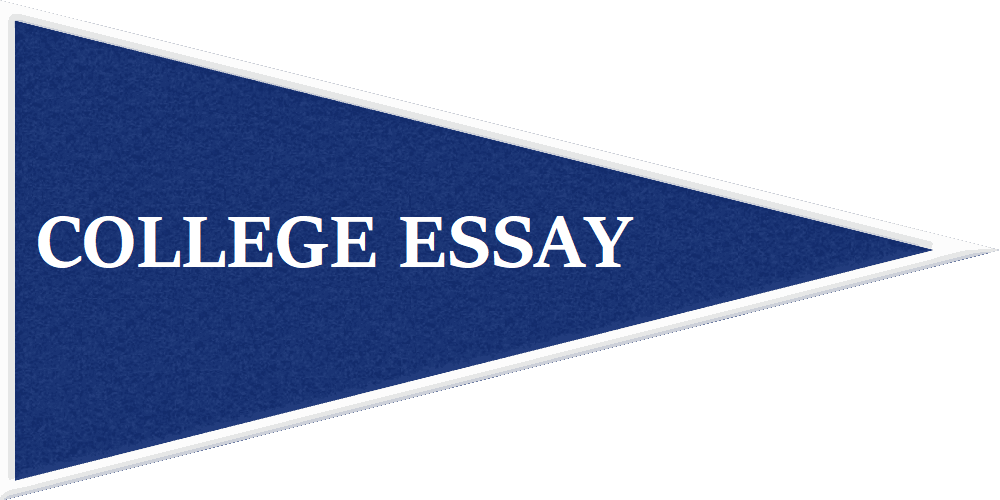
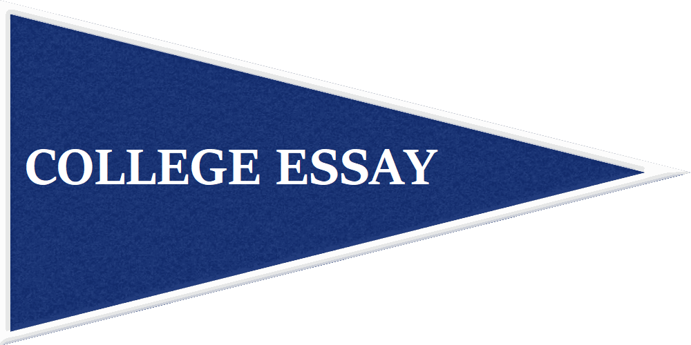

Demonstrated Interest
Demonstrated interest- how you as an applicant show your fondness and affinity towards the school you are applying to- is another one of those nuances that is often very influential.
Schools with acceptance rates above ~10% start to care significantly about an applicant's demonstrated interest in their school. Generally you’ll see schools with acceptance rates between 20% to 60% be more honest about valuing demonstrated interest. An admissions counselor at Lehigh (24.7% acceptance rate this year) likened it to a ‘point system’ whereby visiting the school is a point, requesting information at college fairs is a point, etc. Thus demonstrating your interest in these types of schools is crucial as it really is the difference between them accepting you over another student with similar stats.
Demonstrated interest starts to become null as the acceptance rate climbs higher and higher. Most state schools, for example, receive too many applicants to care whether someone is actually going to their school or not but it sometimes can play in more than you think.
Why Do Colleges Care About Demonstrated Interest?
Obviously a college wants to be ‘liked’ by a student, but the real reason colleges care about interest is because it is a good indicator of whether a student is going to attend their college or not. Schools with acceptance rates between 10% and 60% really care about keeping their acceptance rate low and matriculation rate high (the rate at which accepted students choose to enroll). Acceptance rate and matriculation rate play into US News and World Report rankings, prestige, etc.
So, understanding that super selective schools and state schools are likely where interest matters the least (although it doesn’t hurt), it is underestimated how much interest matters even for selective top schools.
Let me provide some anecdotal evidence I have observed. I watched two kids apply to Johns Hopkins from the same school.


It is cases like this that people point to and say “the college process is so random/ arbitrary/ unfair/ doesn’t make any sense! Student A is academically superior to Student B in every way! He took harder classes, had better grades, test scores, better class rank, and he even had leadership positions!” And, yes, there is an inherent subjectivity to the process because it is people evaluating these intangibles, but in reality it is not random at all.
Student A was a bit better statistically, but he neglected the intangibles- most notably in this case demonstrated interest.
And that often can be the difference between an acceptance and a rejection.
Selective schools like Hopkins claim to not care about interest but I am clearly very skeptical of this claim. At the very least it's a subconscious boost when an admissions officer sees something related to the college that they so adore on your application. Demonstrated interest, though, can often be the single differentiating factor between getting in and not getting in especially for schools in the range of 20-60% acceptance rates.
You have worked too hard throughout your high school career getting the grades and scores to let something like not visiting a school or showing you care hold you back from getting in.
Early Decision/ Early Action
Here I will discuss the advantage of applying early and why colleges like early applications, but for information on the different decision types go to Different Decision Types in "College Process."
Most people are aware of the advantage of applying to a school early decision. It increases your chances at admission slightly. The early acceptance rates can be a bit inflated because recruited athletes are admitted through early decision but there is still a small statistical advantage even if you take out recruited athletes. You can see some of the differences in early acceptance rates compared to regular on this Washington Post Article.
Early decision gives a stronger advantage than early action (but not necessarily restricted early action). Early decision allows the college to be secure in knowing that if they accept you, you will attend.
Understanding the importance of demonstrated interest for colleges and why they care about it, it is easy to see why colleges are so fond of early applications. When an applicant applies early decision they have to matriculate (attend) thus keeping the college's matriculation rates down. This is speculation but another added bonus for colleges with early applicants is that early applicants are often more likely to pay more tuition as they, in general, often wealthier. These reasons explain why, in general, colleges are accepting more and more of their class from the early applicant pool.
Early decision provides a sizeable advantage and is the best way to fully leverage the power of demonstrated interest.
Take advantage of early decision or early action if you can. You need every advantage you can get in today’s application process.
 
